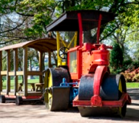

Playground Steam Roller
A colourfull steam roller, which once took passengers, is now a part of a children's play area.

Gordon Highlander Memorial
A Celtic cross made from grey granite from 1882, commemorating the Gordon Highlanders.

Statue of Hygeia
A monument of Hygeia, Greek goddess of health, standing on top of a grey granite column.
Boat Pond
Built by the Model Yacht Club in 1907, it has been continuously used in international model yacht races.
McPuddock
The mechanical diving frog in the Fern House pond is a constant source of delight for all ages.

David Welch Gardens
One of Europe's largest indoor botanical gardens containing many rare and exotic plants on show from all around the world.